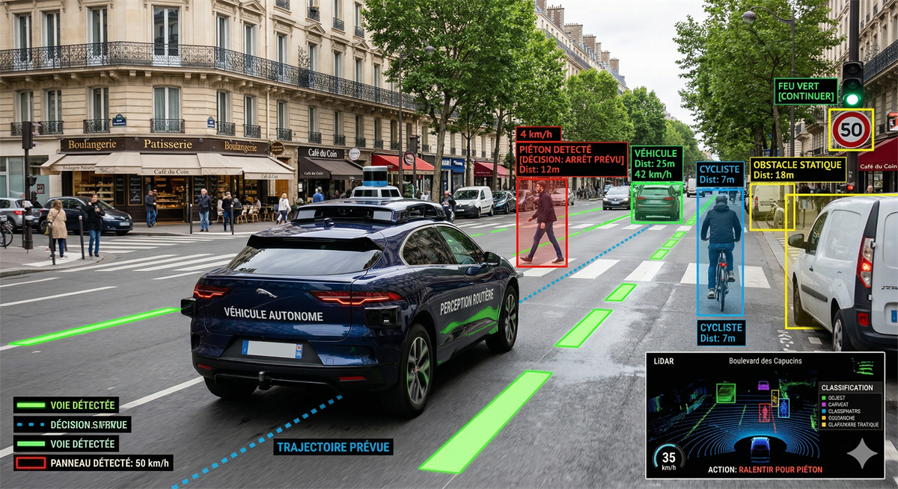

En direct
Description du Système
Conception et implémentation d'une plateforme robotique mobile sur architecture Raspberry Pi. La navigation repose sur un algorithme déterministe de détection de voie par conversion colorimétrique HSV à 25 fps, couplé à un régulateur PID pour le braquage. En parallèle, YOLOv8 est utilisé ponctuellement pour classifier le type d'obstacle détecté et le signaler aux autres utilisateurs du système.
Compétences démontrées
Intégration matérielle multicapteurs, compromis performance/fiabilité sur système embarqué contraint, implémentation d'algorithmes de traitement d'image déterministes, régulation PID et mise en place d'une interface de télémétrie dynamique.
Stack Technologique
Raspberry Pi Python 3 OpenCV (HSV) YOLOv8 (classification) LiDAR 2D Régulateur PIDApplication industrielle
Les algorithmes de fusion sensorielle et d'inférence en périphérie (Edge AI) constituent la brique fondamentale des systèmes d'aide à la conduite (ADAS), de la robotique logistique (AGV) et des drones autonomes.
🚗 ANALOGIE — Perception ADAS urbaine
Détection d'objets et décision temps réel sur véhicule autonome — même chaîne d'inférence.
